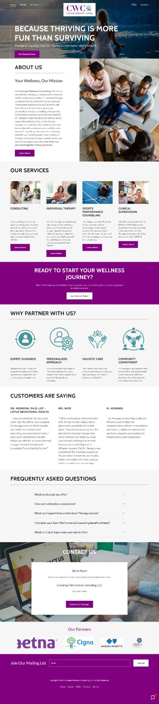

Wellness
Concierge Wellness & Consulting
The challenge
Present several services without overwhelming visitors.
Key decisions
- Group related services.
- Clarify the difference between options.
- Place trust near the decision.
The improved journey
Visitors can identify the relevant service and move toward contact faster.